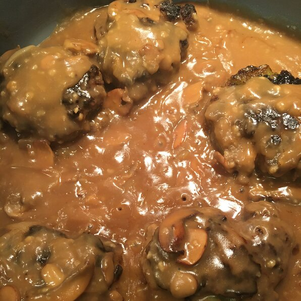

Midwest Salisbury Steak

Delicious Salisbury Steak.
Tastes wonderful when you use good ground sirloin. Goes well with mashed potatoes, egg noodles or rice
Ingredients
- 1 pound ground sirloin
- 1⁄2 cup panko bread crumbs
- 1 egg, beaten
- 2 tablespoons milk
- 1⁄2 (1 ounce) package dry onion soup mix
- 1 teaspoon Worcestershire sauce
- 1⁄4 teaspoon ground black pepper
- 3 tablespoons butter
- 2 cups fresh mushrooms, sliced
- 1 sweet onion, sliced
- s tablespoons all-purpose flour
- 1⁄2 (1 ounce) package dry onion soup mix
- 11⁄2 cups beef stock
- 1 cup water
- salt and ground pepper to taste
Steps
- Mix ground sirloin, panko bread crumbs, egg, milk, and 1/2 packet onion soup mix, Worcestershire sauce, and black pepper together in a large bowl; shape into 5 patties.
- Heat a skillet over medium heat. Cook patties in hot skillet until browned, 3 to 5 minutes per side.
- Melt butter in a separate skillet over medium-high heat. Saute mushrooms and onion in melted butter until tender, 5 to 7 minutes. Stir flour and remaining dry onion soup mix into the mushroom mixture; cook and stir until flour is integrated fully, about 1 minute. Stream beef stock and water over the mushroom mixture while stirring continually; bring to a simmer, reduce heat to medium, and cook, stirring frequently, until the liquid thickens, about 5 minutes. Season with salt and pepper.
- Lie the browned steaks into the gravy; simmer until steaks are firm and gray in the center, about 30 minutes. An instant-read